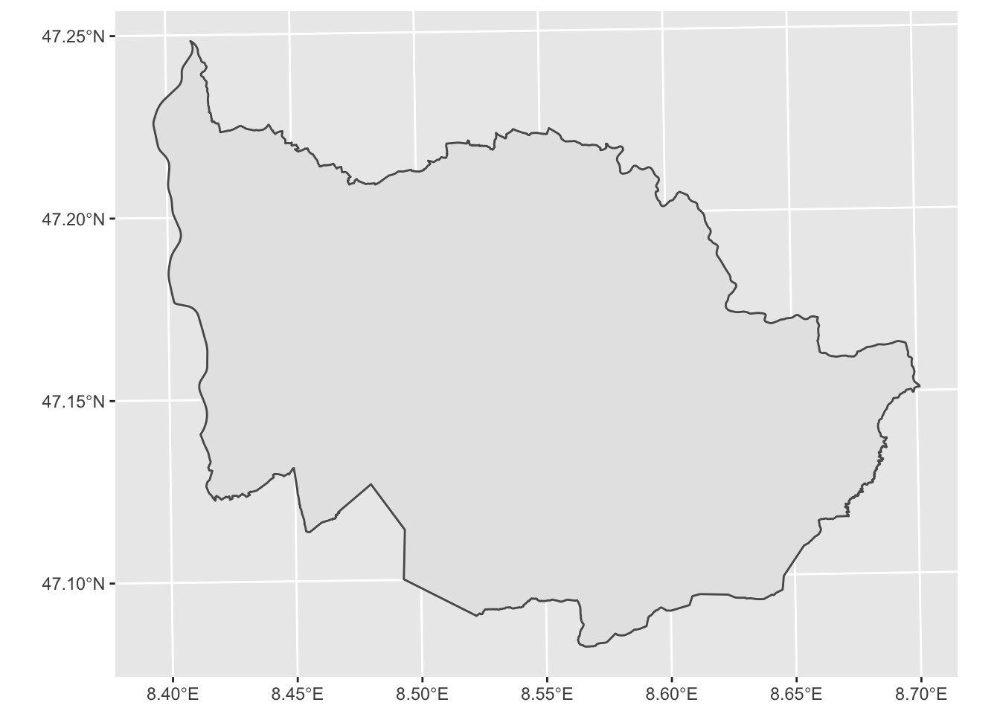
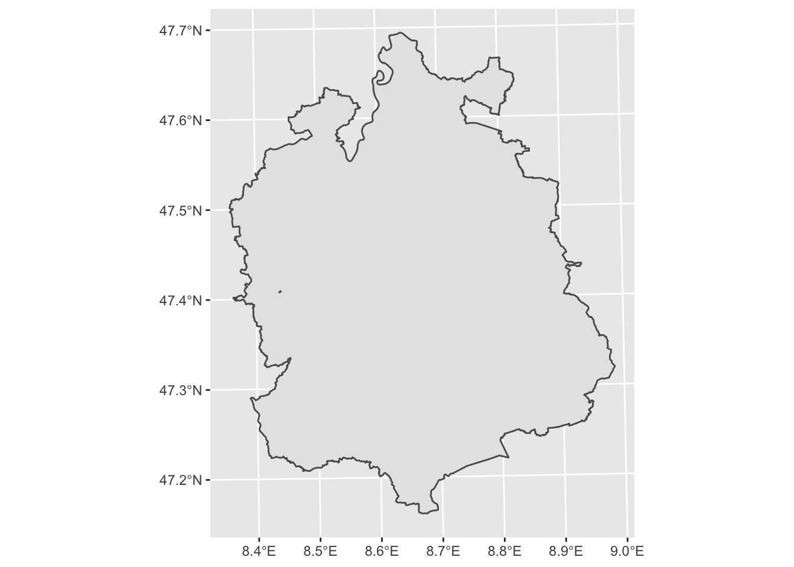
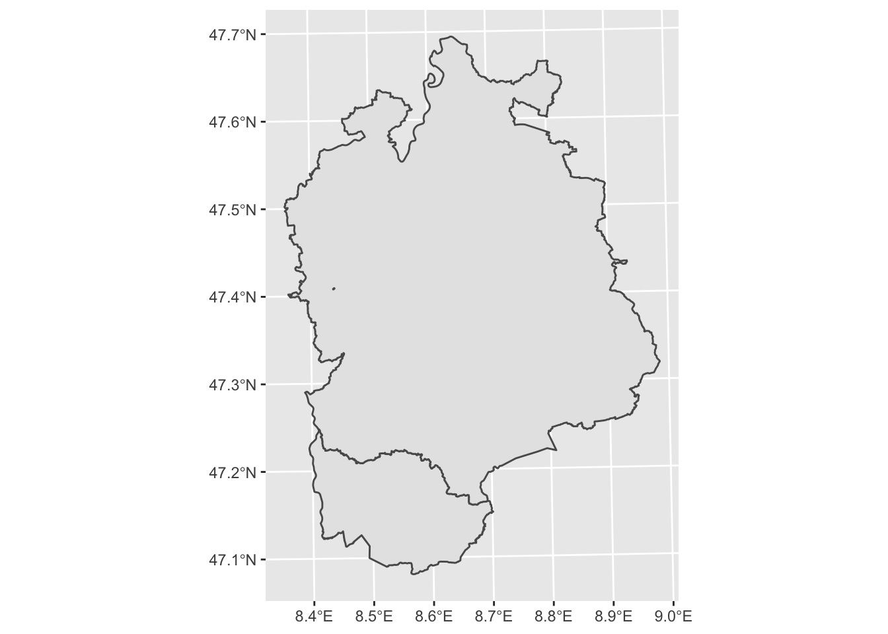
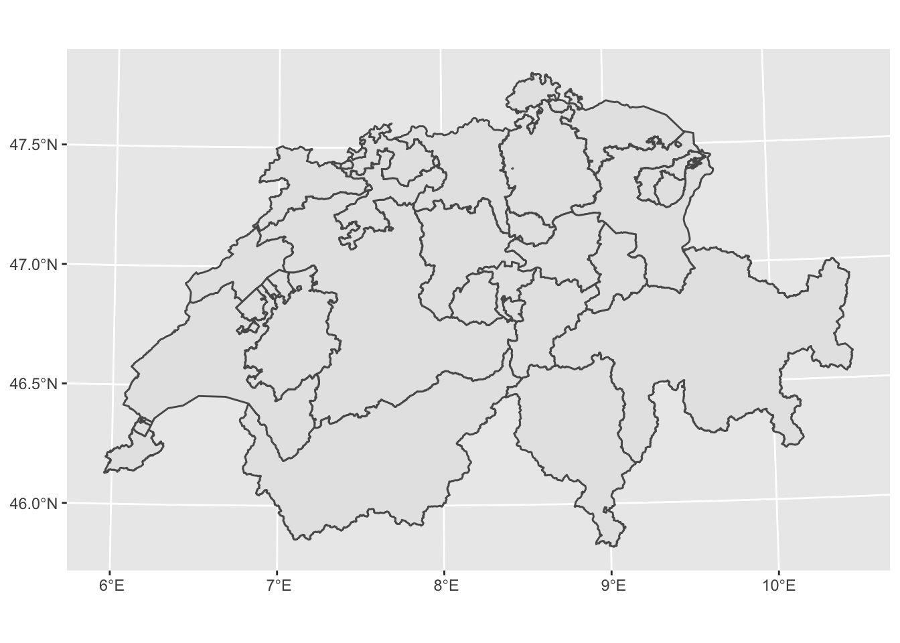
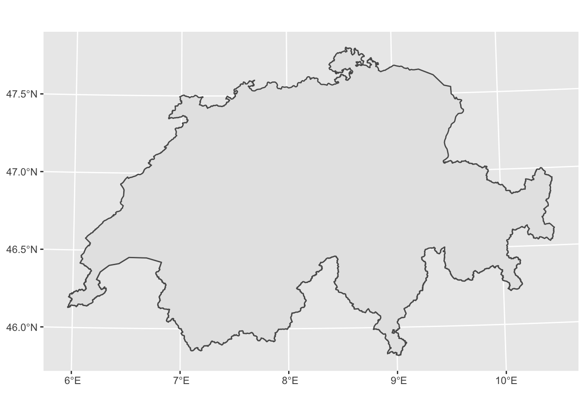

4.1 General Toolset

For this chapter, you will need the following R Packages:
##
## Attaching package: 'dplyr'
## The following objects are masked from 'package:terra':
##
## collapse, desc, intersect, near, select, union
## The following objects are masked from 'package:raster':
##
## intersect, select, union
## The following objects are masked from 'package:stats':
##
## filter, lag
## The following objects are masked from 'package:base':
##
## intersect, setdiff, setequal, union4.1.1 Sort
Sorting out features in ascending or descending order seems a quite primitive operation in any programming language or software package. Even though it is indeed primitive, it is also quite important for filtering and cleaning our datasets. In ArcGIS pro this operation is performed using the tool Sort, which is part of the General toolset of the Data Managenent Toolbox. Below we present how we can perform the aforementioned operation using R. For our example we use the Simple Feature object bezirke, which depicts the districts within the country of Switzerland. Furthermore for performing the sorting operation, we use the record(column) that represents the area (in square km) of every of the districts.
# Read the dataset depicting the districts (Bezirke) in the country of Switzerland
data("bezirke")
# sort the dataset based on the Area in ascending order
bezirke_asc <- bezirke[order(bezirke$area_km2),]
head(bezirke_asc)
## Simple feature collection with 6 features and 4 fields
## geometry type: MULTIPOLYGON
## dimension: XYZ
## bbox: xmin: 2574333 ymin: 1210642 xmax: 2744654 ymax: 1279605
## z_range: zmin: -1.455192e-11 zmax: -1.455192e-11
## CRS: NA
## NAME OBJEKTART OBJECTID area_km2 geom
## 68 St. Gallen Bezirk 153 0.1150075 MULTIPOLYGON Z (((2744592 1...
## 133 Höfe Bezirk 1 0.1312150 MULTIPOLYGON Z (((2701415 1...
## 186 Schaffhausen Kanton 176 0.2405185 MULTIPOLYGON Z (((2707903 1...
## 104 Seeland Bezirk 9 0.4128530 MULTIPOLYGON Z (((2575776 1...
## 119 Wil Bezirk 145 0.5292165 MULTIPOLYGON Z (((2732986 1...
## 131 Höfe Bezirk 43 0.5612065 MULTIPOLYGON Z (((2702572 1...
# sort the dataset based on the Area in descending order
bezirke_desc <- bezirke[order(-bezirke$area_km2),]
head(bezirke_desc)
## Simple feature collection with 6 features and 4 fields
## geometry type: MULTIPOLYGON
## dimension: XYZ
## bbox: xmin: 2580900 ymin: 1128447 xmax: 2833842 ymax: 1219106
## z_range: zmin: -1.455192e-11 zmax: -1.455192e-11
## CRS: NA
## NAME OBJEKTART OBJECTID area_km2
## 15 Surselva Bezirk 13 1373.7973
## 9 Interlaken-Oberhasli Bezirk 15 1231.6744
## 2 Engiadina Bassa/Val Müstair Bezirk 74 1197.5201
## 171 Uri Kanton 159 1076.0927
## 4 Maloja Bezirk 183 973.7269
## 52 Bern-Mittelland Bezirk 89 939.6023
## geom
## 15 MULTIPOLYGON Z (((2713720 1...
## 9 MULTIPOLYGON Z (((2629665 1...
## 2 MULTIPOLYGON Z (((2812980 1...
## 171 MULTIPOLYGON Z (((2684185 1...
## 4 MULTIPOLYGON Z (((2775675 1...
## 52 MULTIPOLYGON Z (((2587852 1...The beauty of R is that offers more than one option to perform a specific operation. In the example above, for performing the sorting operation, we used a simple subsetting method integrated within the so called base R. Nevertheless using the the function arrange() of the dpyr package we will be able to produce the exact same result.
# sort the dataset based on the Area in ascending order
bezirke_arrange_asc <- arrange(bezirke,area_km2) # by default the function sorts in ascendind order
head(bezirke_arrange_asc)
## Simple feature collection with 6 features and 4 fields
## geometry type: MULTIPOLYGON
## dimension: XYZ
## bbox: xmin: 2574333 ymin: 1210642 xmax: 2744654 ymax: 1279605
## z_range: zmin: -1.455192e-11 zmax: -1.455192e-11
## CRS: NA
## NAME OBJEKTART OBJECTID area_km2 geom
## 1 St. Gallen Bezirk 153 0.1150075 MULTIPOLYGON Z (((2744592 1...
## 2 Höfe Bezirk 1 0.1312150 MULTIPOLYGON Z (((2701415 1...
## 3 Schaffhausen Kanton 176 0.2405185 MULTIPOLYGON Z (((2707903 1...
## 4 Seeland Bezirk 9 0.4128530 MULTIPOLYGON Z (((2575776 1...
## 5 Wil Bezirk 145 0.5292165 MULTIPOLYGON Z (((2732986 1...
## 6 Höfe Bezirk 43 0.5612065 MULTIPOLYGON Z (((2702572 1...
# sort the dataset based on the Area in descending order
bezirke_arrange_desc <- arrange(bezirke,-area_km2)
head(bezirke_arrange_desc)
## Simple feature collection with 6 features and 4 fields
## geometry type: MULTIPOLYGON
## dimension: XYZ
## bbox: xmin: 2580900 ymin: 1128447 xmax: 2833842 ymax: 1219106
## z_range: zmin: -1.455192e-11 zmax: -1.455192e-11
## CRS: NA
## NAME OBJEKTART OBJECTID area_km2
## 1 Surselva Bezirk 13 1373.7973
## 2 Interlaken-Oberhasli Bezirk 15 1231.6744
## 3 Engiadina Bassa/Val Müstair Bezirk 74 1197.5201
## 4 Uri Kanton 159 1076.0927
## 5 Maloja Bezirk 183 973.7269
## 6 Bern-Mittelland Bezirk 89 939.6023
## geom
## 1 MULTIPOLYGON Z (((2713720 1...
## 2 MULTIPOLYGON Z (((2629665 1...
## 3 MULTIPOLYGON Z (((2812980 1...
## 4 MULTIPOLYGON Z (((2684185 1...
## 5 MULTIPOLYGON Z (((2775675 1...
## 6 MULTIPOLYGON Z (((2587852 1...4.1.2 Rename
4.1.3 Merge
Merge tool in ArcGIS pro is mainly used for combining datasets from different sources into a new, single output dataset. The main prerequisite for this operation is that the merging datasets have to be of the same geometry class. In R the aforementioned operation could be performed as follows:
# Using the dataset that depicts all the 26 Cantons of Switzerland
data("kantonsgebiet")
# Selecting the Canton of Zug
zug <- filter(kantonsgebiet, kantonsgebiet$name == "Zug") # depicting the Canton of Zug
ggplot(zug) + geom_sf() # depicting the Canton of Zug
# Selecting the Canton of Zürich
zurich <- filter(kantonsgebiet, kantonsgebiet$name == "Zürich")
ggplot(zurich) + geom_sf() # depicting the Canton of Zurich
# merging the two sf objects
merged <- rbind(zug,zurich)
ggplot(merged) + geom_sf() # depicting the product of the merge operation
4.1.4 Dissolve
Dissolve in ArcGIS pro serves as a basic tool for aggregating features based on specified attributes. In R the respective operation could be easily performed using some basic functionalities of the sf package. In the example below we use again the dataset that depicts all the 26 Cantons of Switzerland. Our aim is to transform the given dataset to one unified spatial polygon. In ArcGIS pro the respective tool for this action is the tool Dissolve. In R on the other hand, this can be easily performed using the st_union function of the sf package.
# The study area from the previous example
head(kantonsgebiet)
## Simple feature collection with 6 features and 22 fields
## geometry type: MULTIPOLYGON
## dimension: XYZ
## bbox: xmin: 2494306 ymin: 1075268 xmax: 2833858 ymax: 1268609
## z_range: zmin: 193.51 zmax: 4613.729
## projected CRS: CH1903+ / LV95
## uuid datum_aend datum_erst erstellung
## 1 {0B2364ED-49E0-4D53-A33C-C684DD530B57} 2018-11-22 2012-10-26 2012
## 2 {DDD56CEF-0E61-4EED-85ED-F67A459C93ED} 2018-11-22 2012-10-26 2012
## 3 {54B25E50-30A7-4995-ADE3-5FFF6E13A995} 2018-11-22 2012-10-26 2012
## 4 {921DFEF2-6D91-4CB8-9CFC-2A831C412020} 2018-11-22 2012-10-26 2012
## 5 {95F10F52-8B2F-4D6A-AF7E-D4F915E42F89} 2018-11-22 2012-10-26 2012
## 6 {05D55405-466B-4ECC-83C7-A906DEB0D607} 2017-12-04 2012-10-26 2012
## erstellu_1 revision_j revision_m grund_aend herkunft herkunft_j herkunft_m
## 1 10 2019 1 400 500 2019 1
## 2 10 2019 1 400 500 2019 1
## 3 10 2019 1 400 500 2019 1
## 4 10 2019 1 400 500 2019 1
## 5 10 2019 1 400 500 2019 1
## 6 10 2019 1 400 100 2018 1
## objektart kantonsnum see_flaech revision_q kantonsfla kanton_tei name
## 1 0 18 0 2018_Aufbau 710530 0 Graubünden
## 2 0 2 11897 2018_Aufbau 595952 1 Bern
## 3 0 23 1060 2018_Aufbau 522463 0 Valais
## 4 0 22 39097 2018_Aufbau 321201 1 Vaud
## 5 0 21 7147 2018_Aufbau 281216 0 Ticino
## 6 0 17 7720 2018_Aufbau 202820 1 St. Gallen
## icc einwohnerz Shape_Leng Shape_Area geometry
## 1 CH 197888 758037.4 7105296340 MULTIPOLYGON Z (((2709777 1...
## 2 CH 1031126 746961.0 5950475482 MULTIPOLYGON Z (((2578310 1...
## 3 CH 341463 549348.2 5224634417 MULTIPOLYGON Z (((2679715 1...
## 4 CH 793129 565479.5 3118546162 MULTIPOLYGON Z (((2549756 1...
## 5 CH 353709 363207.1 2812159071 MULTIPOLYGON Z (((2679715 1...
## 6 CH 504686 494074.2 2028094302 MULTIPOLYGON Z (((2703763 1...
ggplot(kantonsgebiet) + geom_sf() # depicting all the 26 Cantons of Switzerland
# Dissolving all the cantons into one unified area
kantonsgebiet_dissolved <- st_union(kantonsgebiet)
head(kantonsgebiet_dissolved)
## Geometry set for 1 feature
## geometry type: POLYGON
## dimension: XYZ
## bbox: xmin: 2485410 ymin: 1075268 xmax: 2833858 ymax: 1295934
## z_range: zmin: 193.51 zmax: 4613.729
## projected CRS: CH1903+ / LV95
## POLYGON Z ((2506094 1129673 372.129, 2507773 11...
# Plot the dissolved output
ggplot(kantonsgebiet_dissolved) + geom_sf()
4.1.5 Find Identical
In ArcGIS pro Find Identical tool identifies records in a feature class or table that have identical values in a list of fields. As an outcome it produces a table listing those identical findings.
duplicated(kantonsgebiet)
## [1] FALSE FALSE FALSE FALSE FALSE FALSE FALSE FALSE FALSE FALSE FALSE FALSE
## [13] FALSE FALSE FALSE FALSE FALSE FALSE FALSE FALSE FALSE FALSE FALSE FALSE
## [25] FALSE FALSE FALSE FALSE FALSE FALSE FALSE FALSE FALSE FALSE FALSE FALSE
## [37] FALSE FALSE FALSE FALSE FALSE FALSE FALSE FALSE FALSE FALSE FALSE FALSE
## [49] FALSE FALSE FALSE FALSE FALSE FALSE TRUE FALSE